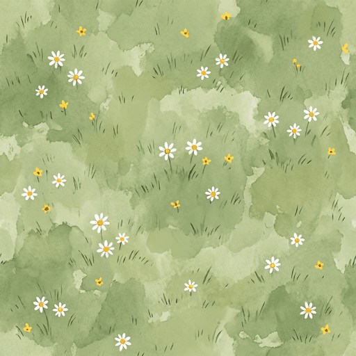
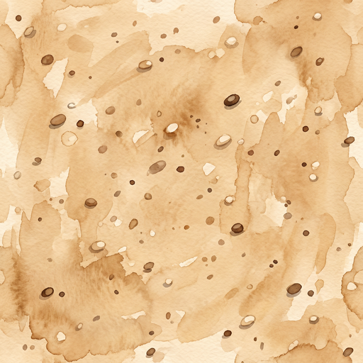
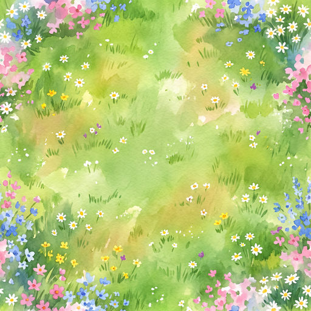
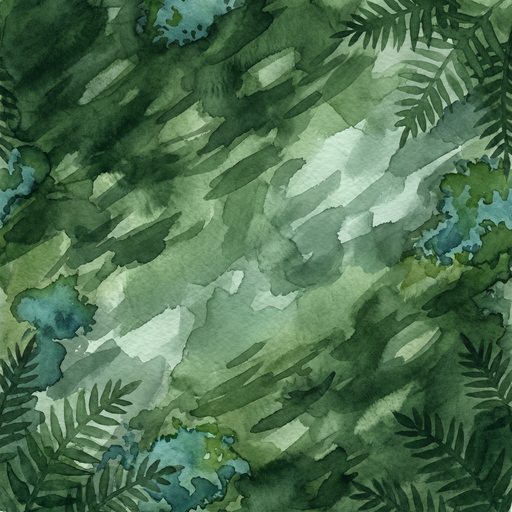
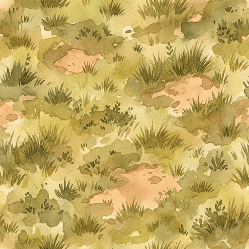

Section A · Front-elevation stamps
5 transparent PNGs · checkerboard shows transparency


Verdict on stamps: strong. Style matches reference cast portraits well — soft watercolour, ink outlines, painted brushwork. The main building's Art Deco language is intact and the rounded corner reads instantly. Paw-print emblem is generously sized and visible at any zoom. Trees are species-distinct.
Section B · Top-down ground textures
Each shown as single tile (left) + 2×2 repeat (right) to test seamless tiling





Verdict on textures: beautiful as single fills, NOT properly tileable.
- + Each tile read as a standalone image is gorgeous — the painted brushwork is exactly the watercolour-storybook treatment we wanted.
- + Palette and brushwork unified across all 5 tiles — same hand, same sitting.
- – Tile-repeat test (right column) shows visible seams. The textures have directional gradients, edge-concentrated motifs (flowers/ferns), and strong central features that don't loop.
- → Workaround: use each as a SINGLE STRETCHED FILL of its target SVG region instead of a tiled pattern. Garden zones are small enough that one tile-per-zone reads fine. We don't need infinite tiling.
- → Or: run each through Adobe
image_generative_expandwith seam-fix prompts to make them properly tileable. Worth doing if we want full freedom of region size later.
Composite mockup · Tier 1 layered onto the A.R.C. plot
Single-fill textures (no tiling) + layered stamps at approximate landmark positions
The pairing test. All 10 Tier 1 files layered onto an A.R.C.-plot-shaped canvas at approximate landmark positions. This is the question to answer:
- Does it read as one painted scene? The stamps and textures should look like they were painted by the same hand for the same map.
- Does the building scale work? 65% canvas width is rough — final coords will tune in code.
- Are the trees too big / too small / right? Currently 14% canvas width each.
- Anything obviously off that needs a re-roll (Adobe gen-expand, OpenAI single-piece fix, or full Manus redo)?